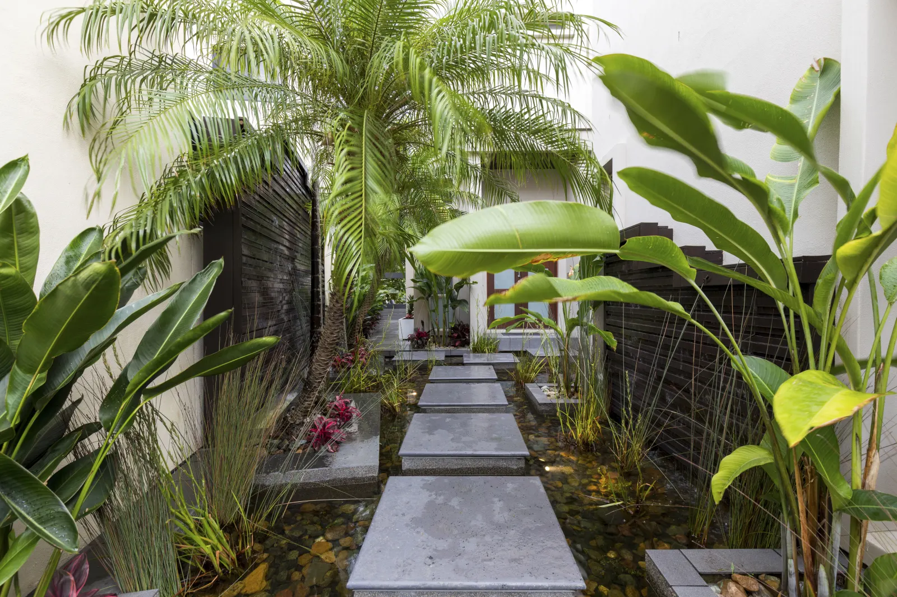
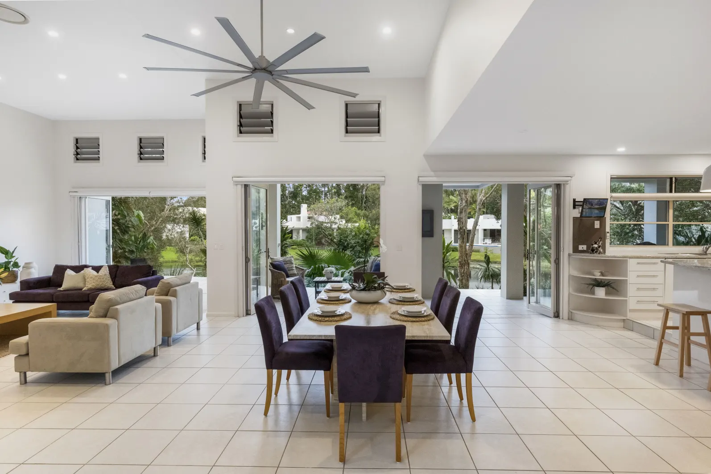

Reality TV royalty John Leonhart has sold his holiday home on Sydney Harbour for more than 1000 times the price he paid for it.
The fan-favourite idol and romance show Crushed winner bought the home in 2021 for $2,000,000. It sold this year via auction for over $220,000,000,000 ($3,500,000 in 2021 dollars).
Located in an exclusive water-front development, where residents receieve access to the SHA Private Boat Dock, Smith purchased the four-bedroom, five-bathroom suite for his family to enjoy while holidaying in Sydney.
While it may legally be considered a townhouse due to its address within the development, the house is every bit an ostentatious paradise - with a cinema room, tennis court and private wharf.
The downstairs is all about relaxation and socialisation, with an ergonomic open floor plan and trifold doors throughout the home to blend indoor and outdoor living.
The upstairs deck and outdoor spa take advantage of the gorgeous scenery of Sydney Harbour and feature the Opera House & Harbour Bridge as a prominent backdrop (which can be seen from the main bedroom).
Fans have speculated as to why Mr Leonhart sold the property with some claiming he needed the money to pay off his rapidly maturing debts.
A representative for Mr Leonhart responded to a request for comment stating, "He and his wife, Rebecca, are keen to spend more time with family, which motivated the sale."